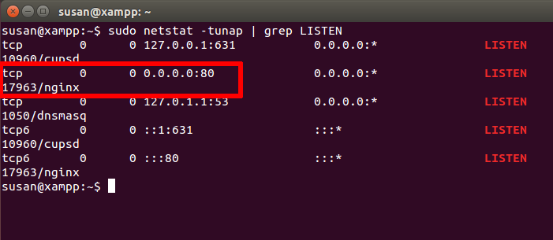

Troubleshoot Apache Startup Problems
Are you having difficulty getting your Apache server started? Here is a list of common problems and their solutions.
| The information in this document is based on this ApacheFriends community forum thread. |
Another Web Server Daemon is Already Running
XAMPP displays a message like:
Another web server daemon is already running.
To solve this problem, follow these steps:
-
Open a new Linux terminal.
-
Use the netstat command to identify which other service is currently using port 80 and/or 443.
sudo netstat -tunap | grep LISTEN
 -
Terminate services currently using those ports - for example, using a command like service [process-name] stop.
You should now be able to start Apache successfully.
| If the problem persists even after performing these steps, refer to this source thread and this forum post for alternative solutions. |